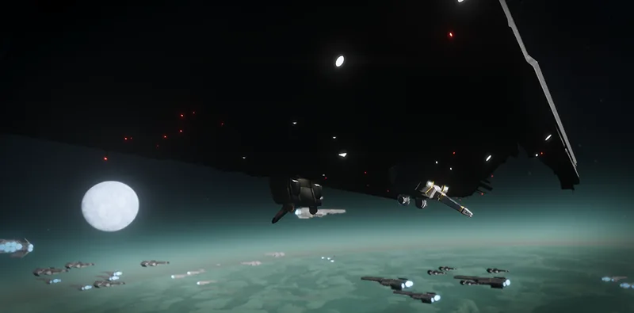

高爆弹片

“军事 看门狗 groups have called 高爆弹片 “savage,” “merciless,” and “well-suited for spreading Democracy.”
— 舰船管理终端
高爆弹片 is a Tier 1 舰船模块 升级 for the 轨道加农炮.
升级效果
- 降低 伤害 falloff from center of explosions caused by 轨道战略配备.
- 增加 the size of 爆炸 内圈半径 of affected 战略配备 by 50%.
代价
 100 Common Sample
100 Common Sample
受影响的战略配备
变更历史
补丁
描述
1.000.000
2024-02-08
随游戏发布。